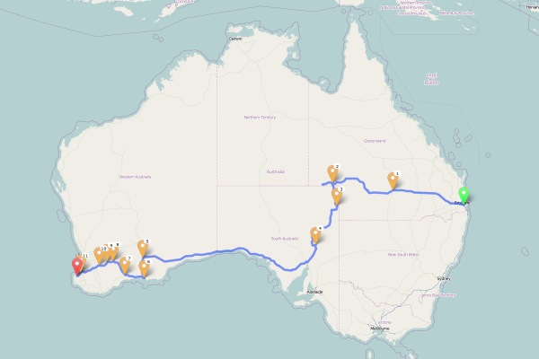

Ride 2014 Planning
Planning for the Trans-Australia Ride of 2014
Route Proposal 1
Brisbane to Busselton (5517km)
↳Click here to view this route on the Open Source Routing Machine↲.

- Brisbane
- Charleville
- Strzelecki Track
- Flinders Ranges
- Port Augusta
- Nullabor
- Eucla
- Norseman
- Esperance
- Ravensthorpe
- Wave Rock
- Kondinin
- Bunburry
- Busselton